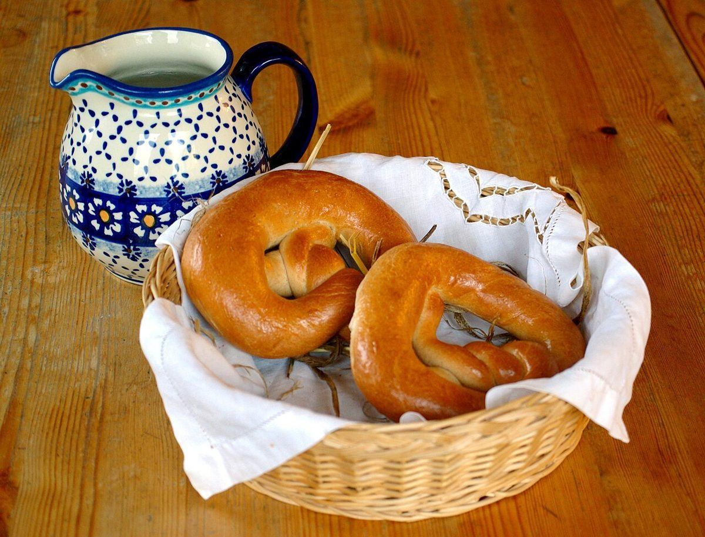

80°メニュー
メニュー
メニュー・価格は準備中です。確認でき次第、こちらに掲載します。
| 商品ラインナップ | 準備中 |
|---|---|
| 価格 | 準備中 |
| ご予約・お取り置き | 準備中 |
下の写真は、ページの雰囲気をつかむための「パンの写真イメージ」です。お店の商品ではありません。何を作っているかは、Instagramでご確認ください。
写真イメージ(商品ではありません)
かたちの見本、八つ。

撮影地不明のイメージ 折り重なる層

撮影地不明のイメージ 断面の気泡

国外のイメージ(香港) 丸いかたち

国外のイメージ(スウェーデン) 巻いたかたち

撮影地不明のイメージ ひねったかたち

国外のイメージ(英国) トーストと赤い色

撮影地不明のイメージ かごの中の丸いかたち

撮影地不明のイメージ 粉をまぶした表面